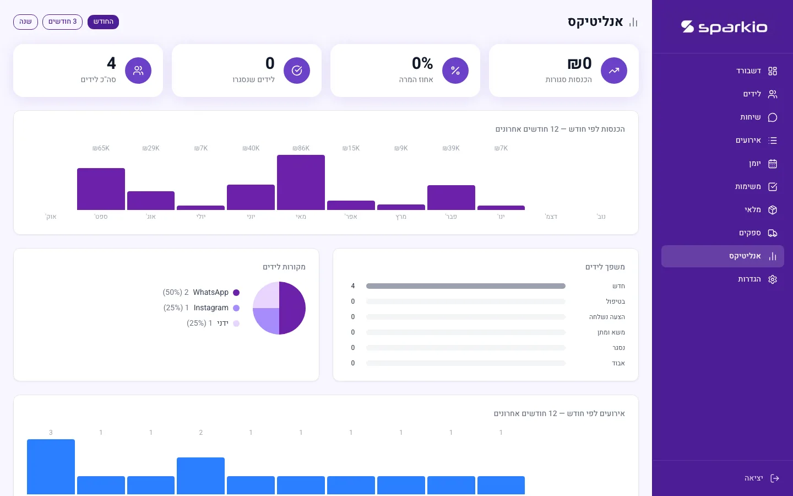
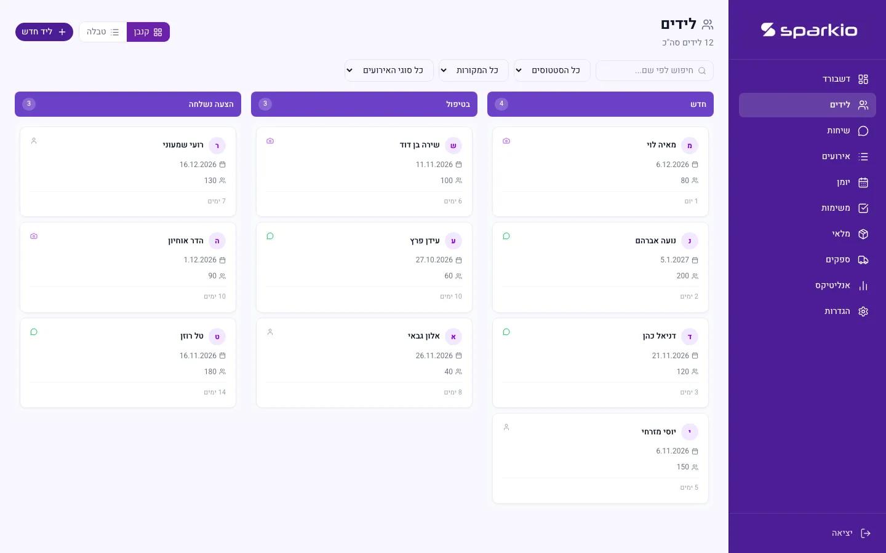
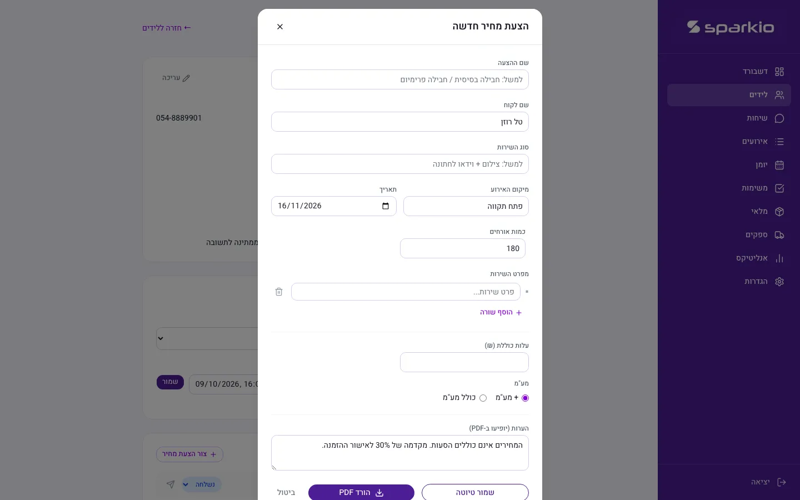
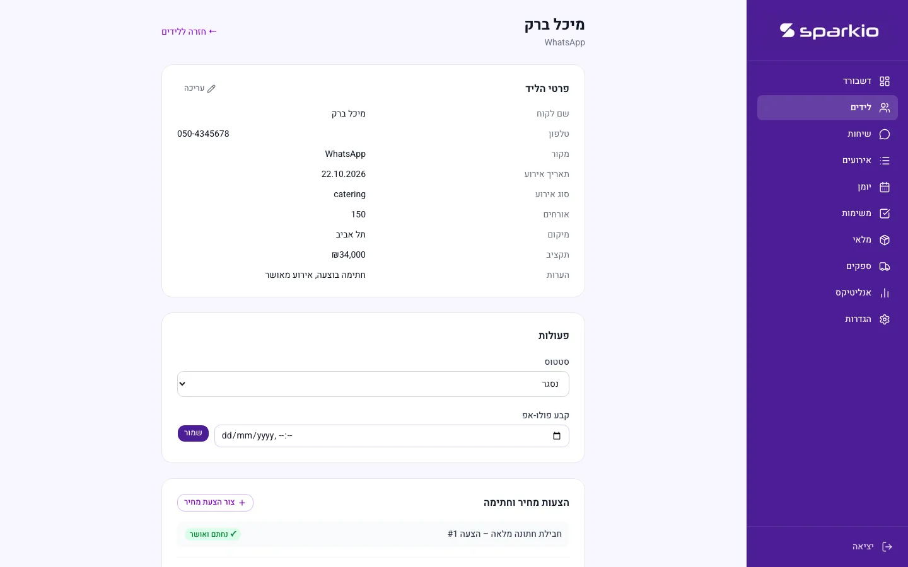
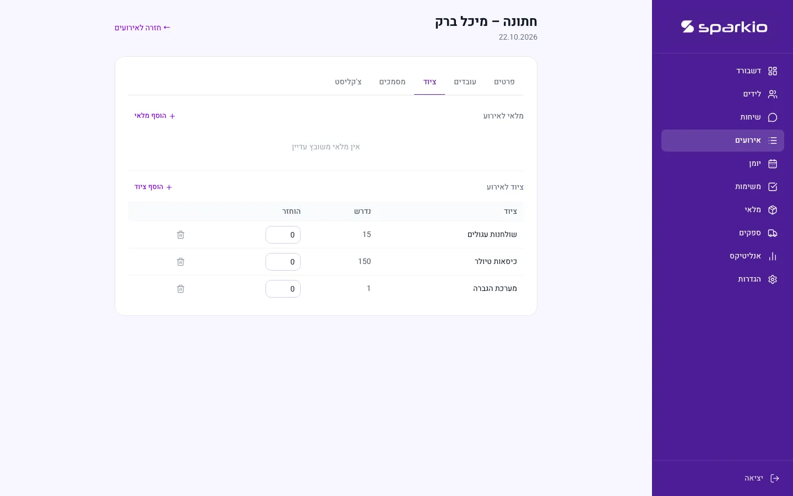
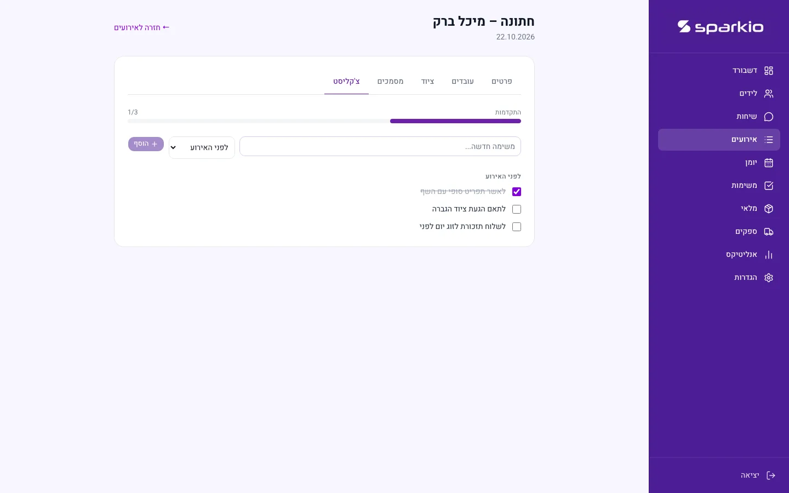

Case study
Sparkio
A CRM that brings an event vendor's leads, quotes, events and clients into one system, instead of Excel, WhatsApp, notes and calendars that don't talk to each other.
Solo project · source private, showcase repo publicProblem
I used to run Sorbo Cocktails, a mobile cocktail bar for events, and I saw this problem from the inside. Event vendors, catering, bar service, equipment rental, manage leads in WhatsApp, write quotes in Word or Excel, and keep the event calendar somewhere else entirely. None of it is connected, so the vendor has to hold the whole pipeline in their head.
Sparkio is what I built to fix that: one system that follows a lead from first contact all the way to a delivered event.
What I built
- Lead pipeline (Kanban) with sources: WhatsApp, Instagram, manual entry
- Quote builder with PDF export and version history
- Online digital signature collection, a client signs and the quote status updates to approved automatically
- Event calendar and scheduling
- Task management, shared between a dashboard view and per-event checklists
- Equipment and inventory tracking per event, assigned quantities vs. returned quantities
- Supplier directory and payment tracking per event
- Analytics dashboard: revenue, conversion rate, lead funnel by status, lead sources, monthly trends
The data model keeps quotes and signatures attached to a lead, not an event, since one lead can carry several quote versions before it's ever booked. That keeps the pre-sale pipeline separate from confirmed-event logistics. The whole system is multi-tenant by design: Postgres Row-Level Security enforces that each business only ever sees its own data, at the database layer, not just in the app code.
Result / status
Sparkio is solo-built and fully working end to end, from lead intake to a signed, paid event. The source lives in a private repository and is available on request; this page and the public showcase repo hold the real screenshots and write-up. There's no production user base to report here, so what follows is about what the system actually does, not usage numbers.
Screenshots






Stack
Next.js 16 (App Router), React 19, TypeScript (strict), Tailwind CSS v4, Supabase (Postgres, Auth, Storage, Row-Level Security), @react-pdf/renderer for quote PDFs, Jest and React Testing Library.